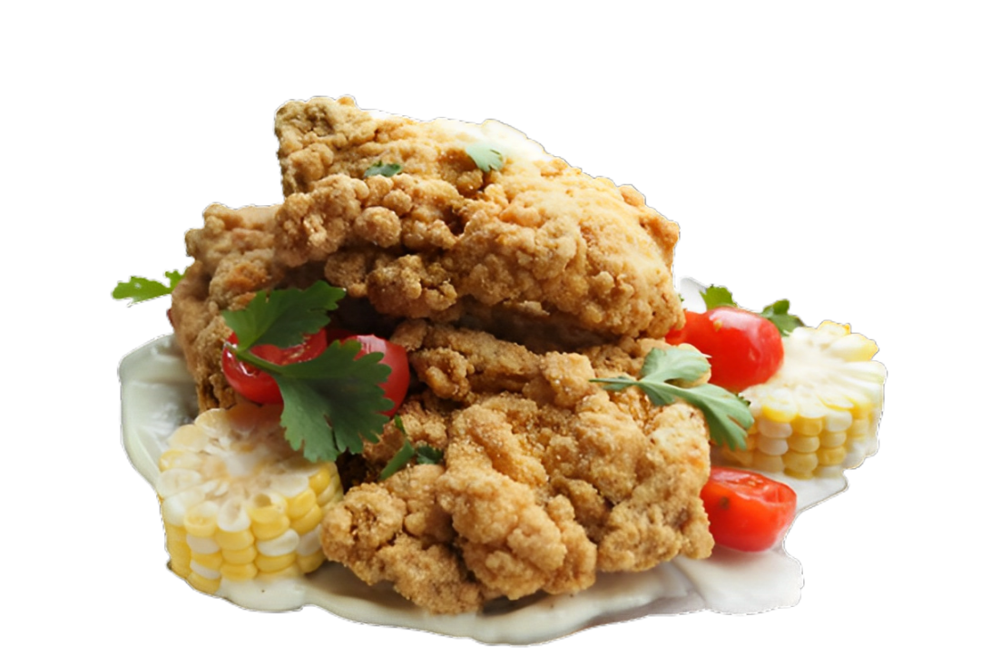
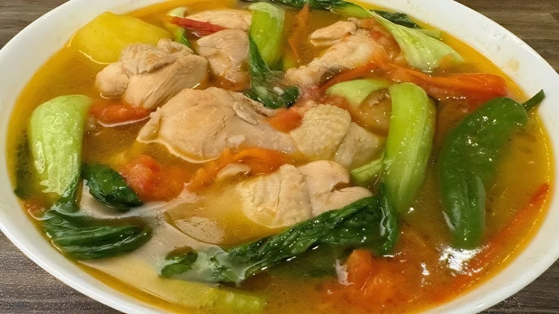
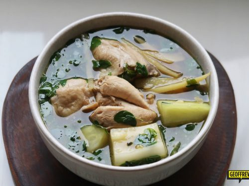

Rich blend of tender chicken, soy sauce, vinegar, garlic, and spices.
Savory mix of chicken, tomato sauce, potatoes, carrots, and bell peppers.
Flavorful combination of chicken, fresh tomatoes, ginger, and leafy greens.
Creamy chicken stew with pineapple, carrots, and bell peppers.
Light chicken soup with ginger, green papaya, and leafy greens.

a. Chicken
b. Soy sauce
c. Vinegar
d. Garlic
e. Bay leaves
1. Marinate the chicken with soy sauce and garlic for at least 1 hour.
2. Sauté garlic in a pan, then add the marinated chicken.
3. Pour in the marinade and vinegar, then add bay leaves.
4. Simmer until the chicken is tender and the sauce has thickened.
5. Serve with steamed rice.

a. Chicken
b. Tomato sauce
c. Potatoes
d. Carrots
e. Bell peppers
1. Sauté garlic and onions in a pan.
2. Add the chicken and cook until lightly browned.
3. Pour in the tomato sauce and simmer for a few minutes.
4. Add potatoes, carrots, and bell peppers, then cook until tender.
5. Season with salt and pepper to taste.

a. Chicken
b. Fresh tomatoes
c. Garlic
d. Onions
e. Fish sauce
1. Sauté garlic, onions, and tomatoes in a pan.
2. Add the chicken and cook until lightly browned.
3. Cover and simmer until the chicken is cooked through.
4. Season with fish sauce to taste.
5. Serve with steamed rice.

a. Chicken
b. Pineapple chunks
c. Pineapple juice
d. Bell peppers
e. Carrots
1. Marinate the chicken with pineapple juice for 30 minutes.
2. Sauté garlic and onions in a pan.
3. Add the chicken and cook until lightly browned.
4. Pour in the pineapple juice and simmer until the chicken is tender.
5. Add pineapple chunks, carrots, and bell peppers, then cook for a few more minutes.

a. Chicken
b. Ginger
c. Green papaya
d. Malunggay leaves
e. Fish sauce
1. Sauté ginger, garlic, and onions in a pot.
2. Add the chicken and cook until lightly browned.
3. Pour in water and bring to a boil.
4. Add green papaya and simmer until tender.
5. Add malunggay leaves and season with fish sauce before serving.